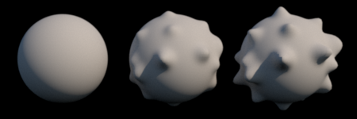
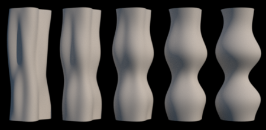

Blending (morphing between) two models¶
Often the best way to make a series of models with smooth variations in shape is to gradually vary the perturbation parameters (e.g., the amplitudes and frequencies of sine components). Sometimes this might not be enough though, for example if the shape is perturbed by noise components and you want to gradually change, say the amplitude of that same noisy perturbation. Blending two models is an alternative way to create intermediate shapes between any given two models (provided they have the same base shape).
The procedure is simple. First, create two models using any of the
objMake*-functions. Then, use objBlend to blend them into an
intermediate shape between the two originals. Example:
% Create a smooth sphere
m1 = objMake('sphere');
% Create a bumpy sphere
m2 = objMakeBump('sphere',[30 .2 .1]);
% Blend them together to create an average. In this case, the result
% will be a bumpy sphere with the bumps having half the amplitude of
% the original.
m3 = objBlend(m1,m2);
figure;
subplot(1,3,1); objShow(m1);
subplot(1,3,2); objShow(m3);
subplot(1,3,3); objShow(m2);
Here’s a rendered image of those spheres. The middle one is a blend between the two others:
{kind=link}
You can also define the weights with which the models are blended. The example below creates two noisy cylinders and makes a series of intermediate shapes, blending the originals in different proportions. The weight w is given as a number between 0 and 1. This is the weight for the first shape. The second shape will then have a weight of 1-w.
% Create two different, noisy shapes
m1 = objMakeNoise('cylinder',[2 1 90 30 .4]);
m2 = objMakeNoise('cylinder',[4 1 0 30 .4]);
% Set the weights with which to combine the original shapes.
weights = 0:.25:1;
% Loop through the weights and save each model
for w = weights
objBlend(m1,m2,w,'save',true);
end
You can set any filename for the model when saving it. The default filename includes the weight, for example, cylinder_025_075.obj. The figure below shows the five shapes:
{kind=link}